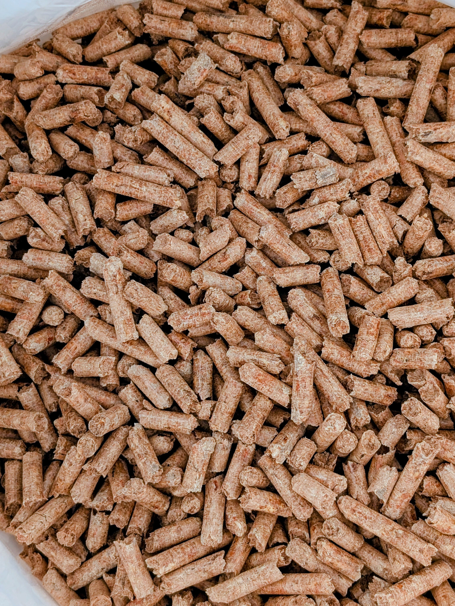
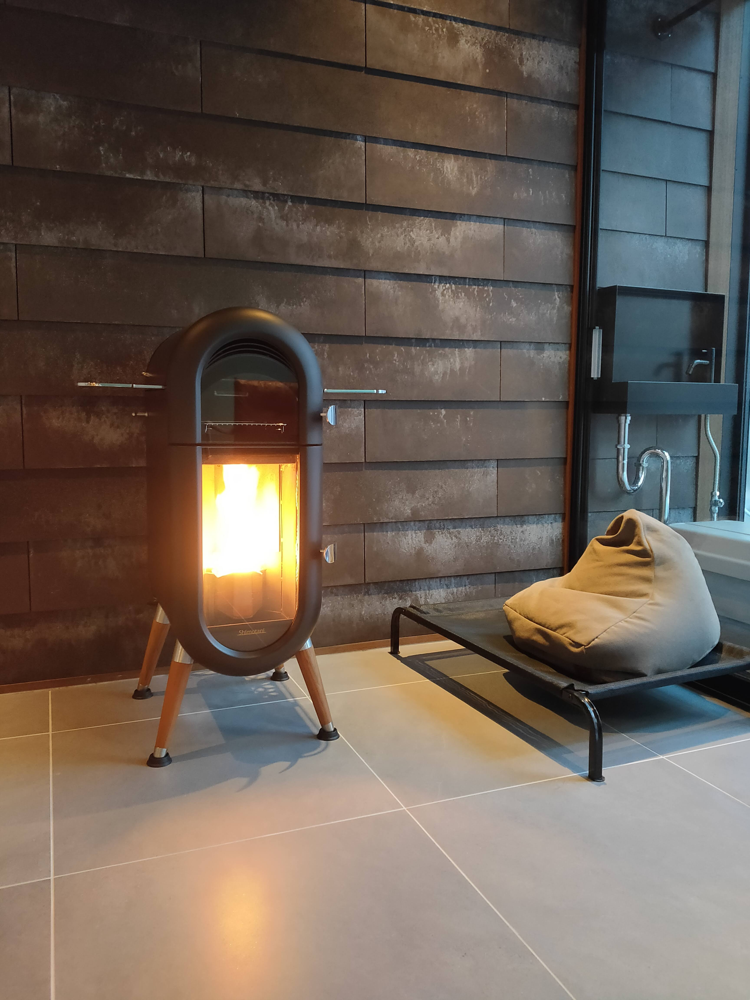
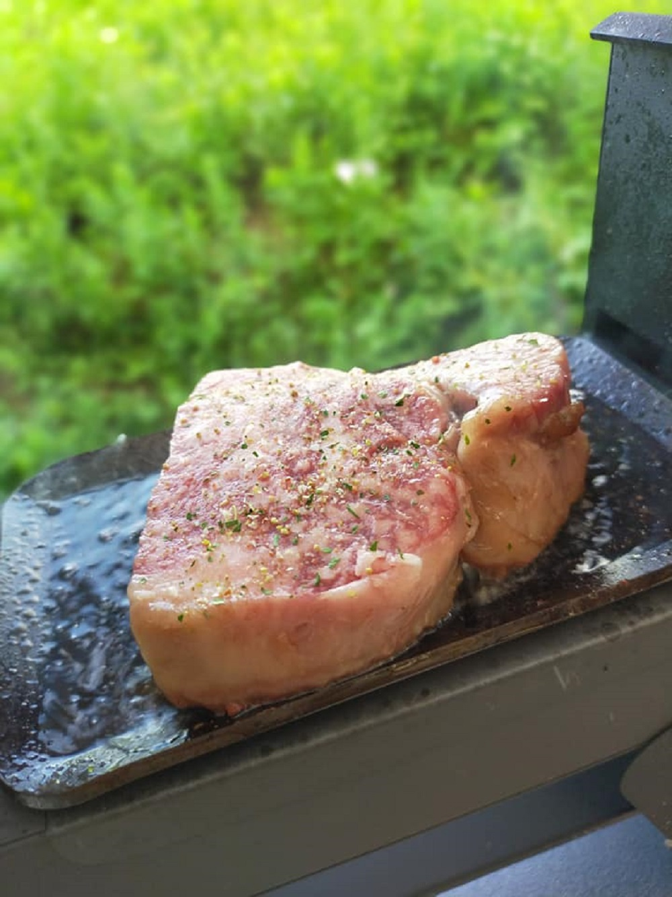

木質ペレットという、
新しいエネルギー。
小さな木の粒に秘められた大きな可能性。
森の恵みから生まれる、環境にやさしい次世代の燃料をご紹介します。
そもそも「ペレット」って
何だろう？
「ペレット」と聞いて、ぱっと思い浮かぶ方はまだ少ないかもしれません。
木質ペレットは、実は身近な素材から作られる、とてもシンプルなエネルギーです。

木のおがくずを、
ギュッと圧縮した自然燃料
木質ペレットとは、製材時に出るおがくずや間伐材を乾燥・粉砕して、高圧で圧縮成型した小さな円筒形の固形燃料です。
-
径
直径 6〜8mm 鉛筆ほどの太さです
-
長
長さ 10〜30mm 指の第一関節くらいの長さ
-
原
原料は 100% 天然の木 接着剤や化学物質は一切不使用
ペレットができるまで
間伐・製材
山林の間伐材や、製材所で出たおがくず・端材を集めます
乾燥・粉砕
含水率を10%以下まで乾燥させ、均一な粒子に粉砕します
圧縮成型
高温高圧で、木自身のリグニンを糊にして固めます（添加物なし）
完成
均一なサイズの木質ペレットが完成。安定した燃焼が可能に
薪とどう違うの？
見た目は木の棒のようですが、ペレットと薪は全くの別物。
手軽さ・効率・環境性能で大きな差があります。
| 比較項目 | 木質ペレット | 薪 |
|---|---|---|
| 着火 | ボタンひとつで着火が可能（対応機種） | 着火材・技術が必要 |
| 煙 | ほぼ無煙（住宅地OK） | 煙が出やすい |
| 灰の量 | 非常に少ない（約1%） | 多め（頻繁な掃除が必要） |
| 保管 | 袋入りでコンパクト | 広いスペースが必要 |
| 温度調整 | 火力調整・自動制御（対応機種） | 手動で調整（経験が必要） |
| 燃焼効率 | 80〜90%以上 | 50〜80%程度 |
| CO₂排出 | カーボンニュートラル | カーボンニュートラル |
カーボンニュートラルとは？
木は成長中にCO₂を吸収しているため、燃やして出るCO₂と差し引きゼロ。
化石燃料（石油・ガス）のように「新たなCO₂」を排出しないため、
地球温暖化の原因にならないクリーンなエネルギーとして注目されています。
お部屋をやさしく暖める
ペレットストーブは、現代の住まいにぴったりな次世代の暖房器具です。
火のゆらめきを楽しみながら、便利で快適な暖房をお届けします。
手軽でクリーン、
暖かな炎のある暮らし
着火から温度調節までスマートに行え、設定温度を安定してキープ。タイマー機能を活用すれば、帰宅前にお部屋を暖めておくことも可能です。エアコンとは異なる輻射熱で、空気を乾燥させにくく、体の芯から温まります。
- 自動着火・温度調整・タイマー機能（対応機種）
- 煙が少なく住宅地でも安心
- 輻射熱で体の芯からぽかぽか
- 炎のゆらぎによるリラックス効果

アウトドアにも、
防災にも。
ペレットの魅力は屋内暖房だけにとどまりません。
電源不要のポータブルコンロで、キャンプ・BBQ・庭先料理から、いざという時の防災グッズとしても活躍します。

持ち運べる「炎」で、
非日常を味わう
国産ストーブメーカー・シモタニ社との共同開発で生まれた、完全無電源のポータブルペレットコンロ『ペレ炉®』『ソロ炉』。
薪のように「はぜる」ことが少なく安定した火力で、キャンプやテラスでの料理から、災害時のライフラインまで幅広く活躍します。
川中建築だからできること
燃料の供給からストーブの施工・メンテナンスまで、トータルでサポートしています。
高品質な燃料の提供
地域の資源を活かした良質なペレットの供給体制を整え、安定した品質管理を行っています。エネルギーの「地産地消」を支えます。
施工からメンテナンスまで
ストーブの選定・設置工事・アフターメンテナンスまで、ワンストップで対応。建築会社ならではの確かな技術力が強みです。
独自製品の開発力
シモタニ社と共同開発の無電源ポータブルコンロ『ペレ炉®』『ソロ炉』など、本当に使える製品を自らの手で生み出しています。
ペレットのある暮らし、
はじめませんか？
「うちにも導入できるの？」「燃料費はどのくらい？」
まずはお気軽にご相談ください。ペレットのプロが丁寧にお答えします。